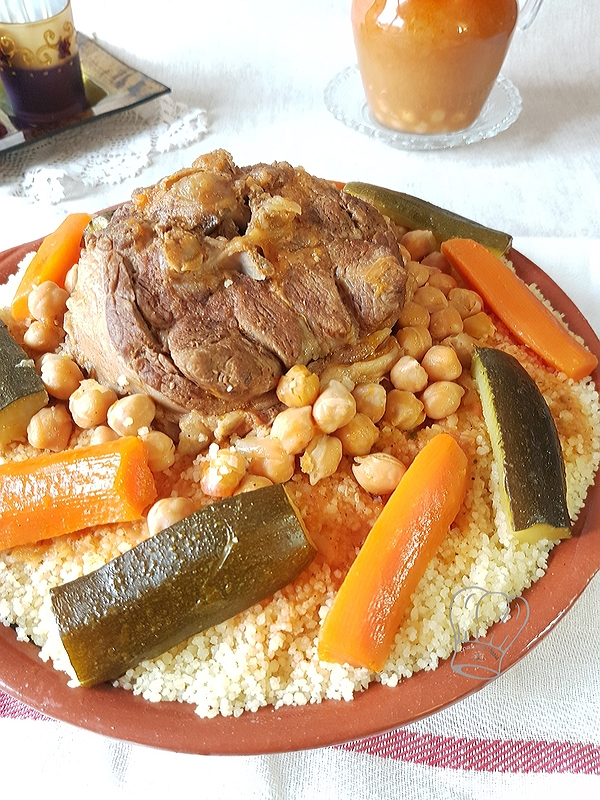

Algerian Couscous

Description
This recipe is made with mutton and chicken, but you can easily change the meats for lamb and/or chicken.
I make this often and my family loves it!
Ingredients
- ¼ cup olive oil, or more as needed, divided
- 8 mutton chops, fat removed
- 4 chicken drumsticks
- 1 pinch salt and ground black pepper to taste
- 3 onions, quartered
- 3 onions, quartered
- 2 tablespoons ground turmeric
- 2 tablespoons ground cumin
- 2 tablespoons ground coriander
- 3 potatoes, cut into chunks
- 3 turnips, cut into chunks
- 3 carrots, sliced lengthwise and cut into chunks
- 1 (6 ounce) can tomato paste
- 2 tablespoons ras el hanout (you can substitute with coriander, saffron, or a mixture of paprika, cumin, and ground ginger )
- 1 (7 ounce) can chickpeas, drained
- 2 zucchini, sliced lengthwise and cut into chunks
- 5 sprigs cilantro, chopped
Couscous
- 3 cups water
- 2 cups couscous
- 1 tablespoon butter
- 3 tablespoons harissa